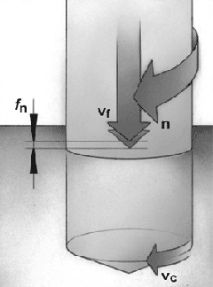

Особенности процесса сверления
Скорость резания (Vc) выражается в м/мин и определяет скорость на периферии сверла. Она может
быть вычислена через частоту вращения шпинделя (n), выраженной в количестве оборотов в минуту.
За один оборот сверла точка на его периферии описывает окружность длиной π x Dc, где Dc
диаметр инструмента. Скорость резания изменяется вдоль режущей кромки от максимума на
периферии до нуля на оси сверла. Рекомендуемые значения скорости относятся к скорости на
периферии сверла.
Скорость резания влияет:
- в большой степени на стойкость инструмента;
- на энергозатраты.
Слишком высокая скорость резания:
- быстрый износ по задней поверхности сверла;
- пластическая деформация режущей кромки;
- неудовлетворительное качество поверхности;
- выход за пределы допуска размера отверстия.
Слишком низкая скорость резания:
- наростообразование;
- ухудшение условий эвакуации стружки;
- низкая производительность/ высокая себестоимость изготовления.
Подача на оборот (fn), измеряемая в мм/об, определяет величину осевого перемещения инструмента
за один его оборот и используется для вычисления скорости осевой подачи сверла.
Скорость подачи или минутная подача (Vf), измеряемая в мм/мин, это подача инструмента по
отношению к пройденному им пути в единицу времени. Другое название этой величины машинная
подача или подача стола. Скорость, с которой сверло проникает в заготовку, равняется
произведению подачи на оборот и скорости вращения шпинделя.
Влияние подачи:
- решающее значение на формирование стружки;
- на энергозатраты;
- определяет механические и температурные нагрузки.
Высокие значения подач:
- устойчивый процесс стружкодробления;
- сокращение времени обработки;
- уменьшение износа инструмента;
- высокий риск поломки сверла;
- ухудшение качества поверхности.
Заниженные значения подач:
- образование длинной стружки;
- повышение качества поверхности;
- ускоренный износ инструмента;
- большее время обработки/высокая себестоимость изготовления отверстия.

Кроме того, в расчетах используются: глубина обрабатываемого отверстия (L), радиальная глубина
резания (ap) и подача на зуб (fz).
Основные факторы, характеризующие операцию сверления:
- диаметр отверстия;
- глубина отверстия;
- точность и качество поверхности;
- обрабатываемый материал;
- условия обработки;
- надежность обработки;
- производительность.